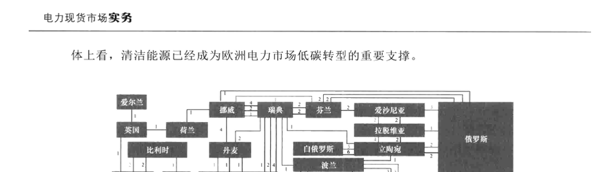
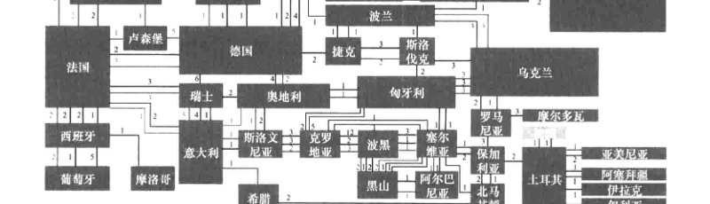
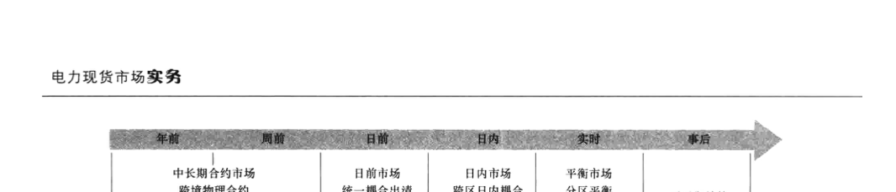
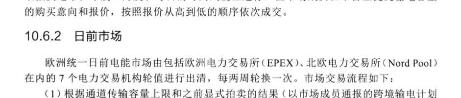
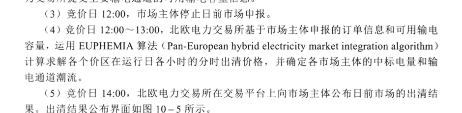
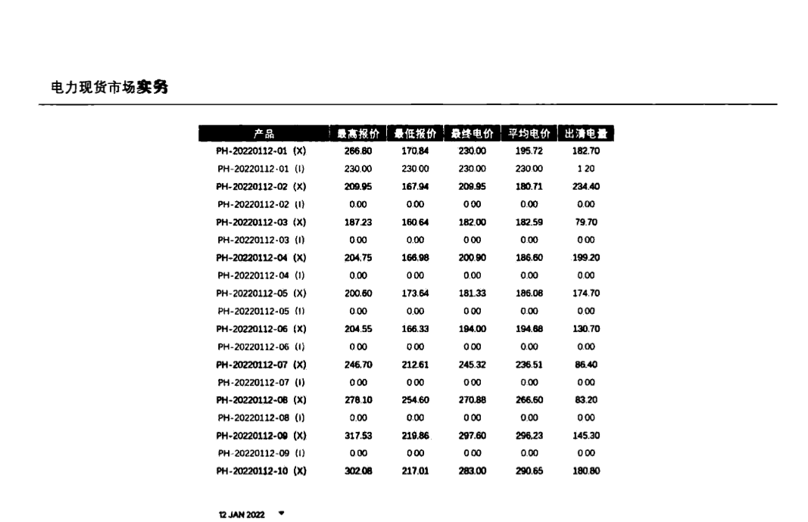

第10章 欧洲统一电力市场
欧洲是电力市场化改革起步最早的地区之一。1996 年《第一能源法案》明确提出建立欧洲统一电力市场的目标，2001年第一个跨国电力市场——北欧电力库正式形成，2009年《第三能源方案》明确了市场耦合的路径。欧洲统一电力市场的目的在于：一是为了适应欧盟经济一体化进程，促进各国电力市场开发和自由贸易；二是引入竞争机制，提升能源行业运行效率和整体经济效益；三是促进成员国之间资源整合和优势互补，更好地保障欧盟整体的能源安全；四是促进清洁能源和可再生能源开发利用，推动能源结构转型和低碳经济发展。
10.1 电力市场概况
10.1.1 电源结构
2021 年，随着欧洲能源转型迅速推进，煤炭产能持续下降，新增可再生能源的势头十分强劲，尤其是风能和太阳能。其中，风电装机容量17.4GW，同比增长17.6%；太阳能发电装机容量25.9GW，同比增长34%。
10.1.2 电网结构
欧洲电网覆盖大部分欧洲国家，包括德国、法国、瑞典、芬兰、挪威、英国、爱尔兰等国家。作为世界上最大的互联电网，欧洲电网由大陆同步电网、北欧同步电网、波罗的海同步电网、英国电网和爱尔兰电网5个主要的同步网络组成。这5个同步电网通过直流联络线形成欧洲互联电网，由欧洲输电系统运营商（European Network of Transmission System Operator, ENTSO-E）管理，覆盖36个国家。欧洲电力市场网络拓扑结构如图10－1所示。
10.1.3 电力供需
与2020年相比，2021年月度各类型电源发电量和需求变化情况如图10－2所示，整
体上看，清洁能源已经成为欧洲电力市场低碳转型的重要支撑。

——≥400kV ——390～400kV ——300～330kV ——220～295kV ——110～150kV ——直流线路
注：图中的数字代表该电压等级的输电线路数量。

2021年，欧洲化石燃料发电量为1069TWh，同比增长4%，占欧洲总发电量的39%，由于可再生能源在2020～2021年期间持续增长以及新冠病毒的影响，与2019年相比降低6%。天然气发电量为525TWh，占欧洲发电量的18%；煤炭发电量为436TWh，占欧洲总发电量的15%，与2019年相比下降16%；生物质能与2019年相比增长4%；可再生能源发电量1068TWh，同比增长1%，与2019年相比增长9%，占欧洲总发电量37%。风能和太阳能发电量为547TWh（风能发电量387TWh，太阳能发电量159TWh），首次超过天然气发电量，占欧洲总发电量的19%，高于2019年的17%；水力发电量同比持平，相比于干旱的2019年增加9%。核电发电量为733TWh，同比增长7%，与2019年相比下
① 本书对任何领土主权、国际边界或域定以及任何城市或地区名称不持立场。
降4%，占欧洲总发电量的26%。
在2019～2020年期间，由于新冠疫情的影响，欧洲电力需求下降3.5%。2021年电力需求基本恢复，同比增长3.4%，几乎达到2019年疫情之前的水平。
10.2 电力市场建设历程
10.2.1 电力体制改革
欧洲电力体制改革由能源电力改革法案推动，其电改内容主要集中在垂直一体化能源企业是否容许存在，以及大型能源企业是否保留输电网、配电网等方面。
1996年，针对欧洲各国电力工业仍普遍处于垂直垄断经营的现状，能源电力改革第一法案提出：① 允许垂直一体化的大型能源企业存在；② 大型能源企业可以保留输电网络产权、经营权，但必须财务独立核算；③ 大型能源企业可以保留配电网络的产权和经营权，但必须财务独立核算。该法案要求各成员国以允许工业大用户自由选择售电公司为起点，实施电力市场化改革，同时要求至少在输电业务的财务层面进行分离，并将拥有的输电资产向作为第三方的监管运行机构和发用双侧的市场主体开放。法案还要求各国通过建立TSO的方式，对各国的输电网络进行统一的调度运行管理。该法案实施后，欧盟各成员国相继开始市场化改革，其中最迅速的当属北欧地区，作为全世界第一个跨国电力市场，北欧四国电力市场于2000年正式形成并开始运营。尽管该法案在推动各国进行电力市场改革起到了至关重要的作用，但其缺少对市场建设更为具体的指导，使得TSO的运行机制及政府对市场的监管模式差别较大。此外，第一能源法案并未涉及跨国电力交易的范畴，跨国电力交易协调机制的缺失使得各国市场的交易机制多样化，不利于未来电力市场的进一步耦合。
2003年，能源电力改革第二法案提出：① 允许垂直一体化的大型能源企业存在；② 大型能源企业可以保留输电网络产权，但经营权必须分离（独立法人）；③ 大型能源企业可以保留配电网络的产权，但经营权必须分离（独立法人）。该法案明确了各国深化市场化改革，并进一步允许居民自由选择售电公司。同时明确了各国TSO的运行机制，要求TSO必须采用市场化的手段进行容量分配与阻塞管理，并将电网运行信息进行实时公开，保证电网运行的透明性。此外，该法案还要求跨国联络线必须向各类交易主体非歧视开放，并鼓励各国通过双边协商的方式开展跨国电力交易。第二能源法案的实施为各国TSO的规范运行提供了有效的法律支撑，并极大促进了跨国电力交易的发展。
2007年，能源电力改革第三法案提出：① 不允许垂直一体化的大型能源企业存在；② 剥夺大型能源企业的输电网络产权；③ 剥离大型能源企业的配电网络产权。该法案作为促进欧洲统一市场形成的重要推手，首先明确将各国TSO与垂直一体化公司完全分离，保证TSO在运行决策上完全独立。此外，该法案推动成立欧洲能源监管合作机构（Agency for Cooperation of Energy Regulator, ACER）与欧洲输电网运营机构组织（European
Network of Transmission System Operator for Electricity, ENTSO-E），从而为跨国电力交易提供了更为集中化的容量管理与运行协调机构。
2011年，能源电力改革第三法案进行重大修正：① 允许垂直一体化的大型能源企业存在；② 大型能源企业可以保留输电网络产权，经营权必须剥离；③ 大型能源企业可以保留配电网络的产权和经营权，但必须财务独立核算。
10.2.2 统一市场建设
近年来，欧盟持续推动加强成员国电力交易所合并和电力市场融合，促进跨国能源合作和统一电力市场建设不断深化。
数十年来，欧洲在建设统一市场建设方面不断推进：
1986年，尚处于"欧共体"时代的欧洲签署了《单一欧洲法案》(Single European Act)，欧盟统一能源市场的设想初步诞生。
1991年，欧盟成立，《欧洲联盟条约》生效，电力作为商品在全欧盟范围内进行自由交易成为了欧盟构建统一市场的一大重要任务。
1993年，欧盟提出建设统一电力市场的改革目标，至今已形成7 个区域市场的统一电力市场雏形。
1996～2003年，北欧、英国、德国、荷兰和意大利电力市场相继成立。
2005年，欧盟提出建立七大区域电力市场，作为推动统一市场建设的重要步骤。
2006～2008 年，日前电力跨境耦合市场启动，各国电力市场开始合并，中西欧、伊比利亚、东南欧、英国和爱尔兰等区域电力市场相继成立。
2011年，欧盟提出2014年之前建成欧洲内部统一能源市场（single european energy market）的目标，要求各成员国加快天然气管道、输电网络等基础设施的互联，并且为推进能源市场立法统一运行规则和技术标准等各项工作列出计划时间表。
2014年，区域价格耦合（price coupling of regions）项目开始实施，中西欧、北欧与英国和爱尔兰电力3 个区域电力市场率先实现日前市场的耦合，又先后与伊比利亚电力市场和意大利电力市场实现耦合，形成了欧洲统一电力市场的雏形。
2015年2月，在日前电力跨境耦合市场联合出清的基础上，北欧电力交易所（Nord Pool）联合欧洲电力交易所（EPEX）、意大利能源交易所（GME）、伊比利亚半岛电力交易所（OMIE）及来自12 个欧洲国家的输电网运营机构（TSOs）共同启动了欧洲跨境日内电力市场项目（XBID）。
2018年，欧洲统一市场已经实现了除东南欧电力市场以外的六大区域市场日前耦合，并在未来进一步推进与东南欧电力市场和希腊等国电力市场的耦合进程。除了日前市场以外，欧洲电力市场运营商与输电系统运营商共同宣布欧洲跨境日内市场成功上线运行，跨境日内市场（XBID）项目开始实施，整个欧洲日内连续市场整合在一起，补充现有的日前耦合市场。目前已实现了中西欧、北欧和伊比利亚区域电力市场的日内耦合。
2020年，在波兰推出完整的日内交易和清算服务，允许用户在15 个国家与Nord Pool进行日内交易。
10.3 新能源参与市场概况
10.3.1 新能源参与市场机制
欧洲各国实施的新能源补贴机制包括配额制、绿证、固定上网电价、差价合约、溢价机制、招标电价等，在可再生能源发展的不同阶段，分别采取不同的补贴政策，具体如下：
1）在发展初期，由于新能源成本高，直接参与电力市场没有价格竞争优势，欧洲许多国家主要采用固定电价机制（FIT），新能源不直接参与市场交易，由配电网运营机构以固定电价收购，由输电网运营机构统一纳入电力现货市场。随着新能源开发规模的扩大，固定电价机制也带来了政府新能源发电补贴负担过重和居民电价大幅上涨等诸多问题。
2）2005年以后，欧洲各国先后调整电价补贴政策，鼓励新能源参与电力市场。目前欧洲主流的新能源电价补贴方式分为两类：① 以德国、西班牙、丹麦等为代表的固定（溢价）补贴（FIP）；② 以英国为代表的差价合约（CFD）。差价合约与溢价补贴相同之处在于都鼓励新能源发电直接参与电力市场，利用新能源低边际成本的价格竞争优势，提高新能源消纳能力；不同之处是差价合约机制给予新能源发电固定合约电价，溢价补贴机制给予新能源固定补贴电价。
此外，欧洲还通过多级市场协调配合以促进新能源消纳。中长期交易为新能源预留消纳空间；日前市场充分发挥新能源边际成本低的优势；日内市场和平衡市场协调配合，共同处理新能源波动性出力特性引起的系统不平衡电量。
同时，为了适应新能源出力特性，在电力现货市场引入日内短期交易新产品，提高新能源消纳能力。为有效促进新能源参与电力市场，德国对电力市场机制进行了改进。例如，为了满足新能源接入后市场对超短期交易的需求，2011 年德国引入一种新的日内交易产品，即 15min 日内产品交易，采用连续竞价交易的模式，保证了有意愿的交易双方能够第一时间达成交易。15min 产品交易有别于此前的小时级日内产品交易模式，其时限更短且交易更为灵活，很好地适应了高比例新能源、大出力时对交易时限和交易灵活度的新要求，提高了新能源的消纳水平。最后，在统一的电力市场中，通过多个国家的日前市场联合出清，扩大资源优化配置范围，促进新能源在更大范围消纳。
随着越来越多的可再生能源项目实现平价上网，政府补贴也逐渐降低，无补贴可再生能源购电协议（PPA）在欧洲越来越受欢迎。PPA 由企业与独立的电力生产商、公用事业公司或金融公司签署，在约定期限内以固定价格承诺购买一定数量的可再生能源电力。大的工业用户也会通过 PPA 锁定长期电价，规避风险，同时保证了绿色电力消费。实际中，PPA 的种类有很多，可以分为实体购电协议（PPPA）和虚拟购电协议（VPPA）。合同条款包括如合同期、电量、电价、绿证价格、交割期、交割点等，成为买卖双方电力购售和银行融资的基础。
10.3.2 新能源参与市场交易规模
以欧洲最大的电力现货交易所之一 EPEX SPOT 为例，其日内市场交易量近年来快速上升，也反映了可再生能源参与电力市场的程度越来越高。2020 年日前市场交易量为 510.4TWh，覆盖德国、法国、英国、荷兰、比利时、奥地利、瑞士和卢森堡八个国家，其中德国份额最高。日内交易量达 111.2TWh，同比 2019 年上升 21%。而在日内市场的各种产品中，15min 和 30min 短期交易产品的交易量也逐渐上涨，也主要以德国为主。
2019 年，可再生能源占欧盟 27 国能源消耗的 19.7%，提前一年接近设定的 2020 年占 20%的目标，仅仅低 0.3%。相较 2004 年水平（9.6%的占比）增长了一倍。各国家中，瑞典可再生能源占其终端能源消费总量的一半以上，达 56.4%，在 2019 年欧盟成员国中所占份额最高；其次是芬兰（43.1%）、拉脱维亚（41.0%）、丹麦（37.2%）和奥地利（33.6%）。相反，卢森堡的可再生能源占比最低，只有 7.0%，另外马耳他（8.5%）、荷兰（8.8%）和比利时（9.9%）占比也落后。汇总各国家目标发现，有 14 个成员国已经超过了 2020 年的目标。6 个国家已接近其目标：匈牙利、奥地利和葡萄牙与国家目标的差距只有 0.4 个百分点；另外，德国（0.6 个百分点）、马耳他（ 1.5 个百分点）和西班牙（1.6 个百分点）三国的差距不大。相比之下，法国（差 5.8 个百分点）、荷兰（差 5.2 个百分点）以及爱尔兰和卢森堡（各差 4.0 个百分点），差距较大。
10.4 电力工业结构现状
10.4.1 电网与调度
欧盟各成员国的行业结构呈现多样化特征，约半数成员国的输配电业务仍保持在同一垂直一体化的电力企业内，但按照欧盟要求将输电、配电和其他业务分离。各国输电网运营机构由于大多数从原有垂直一体化公用电力公司转变而来，其输电网运行管理以"输电系统运行机构模式"，即 TSO 模式为主，在该模式下，输电网及其系统运行机构一体化运营；同时也存在系统运营机构与输电网相对分离的独立输电运营模式（independent transmission operator，ITO）模式。在欧盟层面，未设立统一电网调度机构，由 ENTSO-E 协调各国、各地区之间系统运行和电网规划建设。ENTSO-E 成立于 2008 年，其主要职责之一就是制定通用的电网运行、发展规划以及市场耦合规则，包括运行安全与可靠性、容量分配、阻塞管理以及并网要求等；此外，ENTSO-E 每两年滚动更新欧洲十年电网发展规划报告（ten-years network development planning，TYNDP）并进行相关需求预测分析和远景展望。
10.4.2 电力市场组织机构
随着欧洲统一电力市场计划的不断推进，欧洲各大电力交易所的联合交易促使各国电
力市场逐步融合。目前欧洲已有约20家电力交易所。在欧洲统一电力市场框架下，各国电网调度运营与电能及其金融衍生品交易一般采用独立运营方式，即各国输电运营机构负责本国电网调度运营，而电力交易机构（PX）一般采用多国联合的方式，甚至一些国家（如英国）存在多个电力交易机构。目前欧洲较大的电力交易机构包括北欧电力交易所（Nord Pool）、欧洲电力交易所（EPEX）、欧洲能源交易所（EEX）、阿姆斯特丹电力交易所（APX）、N2EX电力交易所、伦敦洲际交易所（ICE）、伊比利亚电力交易所（MIBEL）、意大利能源交易所（GME）、意大利电力金融衍生品交易所（IDEM）等。
10.4.2.1 北欧电力交易所（Nord Pool）
北欧电力现货交易市场（Nord Pool Spot）主要负责运营北欧及波罗的海国家的日前及日内市场。来自20多个国家的380家公司在这里进行交易。
目前，Nord Pool由北欧的电网运营商StatnettSF（挪威）、Svenska kraftnät（瑞典）、FingridOy（芬兰）、Energinet.dk（丹麦），以及波罗的海地区的电网运营商Elering（爱沙尼亚）、Litgrid（立陶宛）和Augstspriegumatikls（拉脱维亚）共同拥有。主要服务于北欧、波罗的海地区、德国、英国等电力市场，也给波兰、克罗地亚和保加利亚的电力市场提供服务，是13个欧洲国家（奥地利、比利时、丹麦、爱沙尼亚、芬兰、法国、德国、英国、拉脱维亚、立陶宛、荷兰、波兰和瑞典）指定的电力市场运营商。
Nord Pool的交易电量早在2015年就达到4890亿kWh，包括：创纪录的北欧和波罗的海日前市场交易3740亿kWh，北欧、波罗的海的海和德国日内交易50亿kWh，英国电力市场的日前交易1100亿kWh。2017年，在Nord Pool中更是共有来自20多个国家的380个市场主体在交易中表现活跃。2020年，Nord Pool年度总交易量为995TWh，其中北欧和波罗的海日前交易量为7180亿kWh，英国日前交易为1770亿kWh，日内市场交易量为260亿kWh，系统平均价格为10.95欧元/MWh。
北欧电力交易所设立了保证金制度，作为安全保障机制。在北欧电力现货市场进行交易的成员须交纳保证金，保证他们能够支付其选择的合约。保证金可以担保账户的现金形式交纳，也可以以担保函的形式（anon-demand guarantee）交纳。
10.4.2.2 欧洲电力交易所（European Power Exchange, EPEX）
EPEX是欧洲中心的电力现货交易所。它涵盖法国、德国、奥地利和瑞士，累计占欧洲总能源消耗的1/3以上。
EPEX电力现货市场由EPEX SPOT SE公司运营。EPEX SPOT SE在法国成立。其股东资本由EEX集团和HGRT持有，其中EEX集团持有51%股份，HGRT公司持有49%股份，而HGRT是一个由RTE、Tennet和Elia控股的输电系统运营商。
EPEX在2018年表示计划在丹麦、挪威、瑞典、爱沙尼亚、拉脱维亚、立陶宛和波兰进行业务扩张，消息一出，当年交易量即创历史新高。2019年2月，EPEX SPOT SE获得了在挪威运营日内市场的许可，打破了北欧电力交易所的长期区域垄断，增加了现货电力交易平台之间的竞争。
10.4.2.3 欧洲能源交易所（European Energy Exchange, EEX）
欧洲能源交易所（EEX）成立于2002年，总部位于德国莱比锡，是当时设置在德国法兰克福和莱比锡的两大德国能源交易所合并组建的。EEX 目前是欧洲最大的能源交易集团，旗下子公司的交易内容覆盖了电力现货及衍生产品、天然气、煤炭、碳排放权等领域。EEX 由40多家电力交易机构或能源电力企业（包括电网企业）共同持股，控股股东是德意志证券集团旗下欧洲期货交易所苏黎世公司，股份占62.82%。EEX 还直接或间接持有欧洲电力现货交易所（EPEX Spot SE）、欧洲能源衍生品交易所（EEX Power Derivatives GmbH）以及欧洲商品清算公司（European Commodity Clearing AG, ECC）等机构的股份。
EEC 及其持股的法国 Powernext 公司共同持有 EPEX 电力现货交易所 51%的股份，EPEX 主要负责德国、法国、奥地利、瑞士等国的电力现货市场交易；EPEX 持有阿姆斯特丹电力交易所（APX）的全部股份，APX 负责荷兰、比利时、英国电力现货市场。此外，EEX 和 Nasdaq 交易所还负责电力衍生品交易。
10.4.3 监管机构
欧盟的调度和电力市场监管体系包括欧盟和成员国两个层面，欧盟层面的监管机构主要包括能源监管机构理事会（Agency for the Cooperation of Energy Regulators, ACER）和欧洲能源监管机构委员会（Council of European Energy Regulator, CEER）。两者的目标均为促进欧盟能源市场的统一和各国能源监管机构间的协作，但定位有所不同：前者属于欧盟委员会的下属机构，负责欧盟法律法规的监管合作事宜；后者是一个非盈利性组织，其职能对 ACER 形成补充，负责能源监管领域内其所有事项的协调。
10.5 电力市场架构及特点
欧洲统一电力市场由中长期合约市场、日前市场、日内市场和平衡市场四大部分构成。
中长期合约市场的交易品种包括物理合约与金融合约两大类。物理合约通过市场成员进行场外双边协商自行签订，没有统一的交易市场。在合约签订之后，为保证双边合约的顺利执行，由市场成员向交易涉及国家的 TSO 购买物理输电权，并且在规定时间内向电力送出国和受入国的 TSO 提交自行分解的跨境输电电力计划。物理输电权的购买能锁定所需的输电容量，主要通过开展显式拍卖获得，显式拍卖是指输电容量通过独立于电能能量市场的方式单独拍卖。金融合约可以通过场外交易（OTC）或在纳斯达克交易所、伦敦洲际交易所等以购买期货、期权等金融衍生品的方式达成，其产品类型包含基荷、峰荷的期货，远期合约，期权合约以及差价合约，以电力现货市场价格为参考，采用现金结算模式，不需要交割。
日前市场以中长期合同为基础进行次日 24h 的电能交易，采用"集中竞价、边际出清"的市场模式。目前欧洲已通过区域价格耦合（price coupling of regions, PCR）项目
建成了统一日前电能市场，通过 Euphemia 算法对所有投标区域内的可用电力资源进行集中优化出清。欧洲统一日前电能优化出清模型，以社会福利最大化为目标，考虑了系统电能平衡、不同类型报价订单的中标条件、联络线传输容量限额及潮流变化率等约束。从电网调度运行和市场主体参与方式来看，市场主体根据自身用电需求、发电能力、用户资产组合特点等参与市场交易，基于交易结果进行分散决策并执行，自主确定开停机方式、日计划发电曲线、用电曲线等，承担自平衡责任。相比美国采用节点电价方式定价的区域电力市场，欧洲日前市场更加强调电能交易的流动性以及不同市场主体报价方式的灵活性。
日内市场是对日前市场的补充，通过在日前市场关闭后到实时运行前的时间段采用连续滚动撮合交易，按照"先来先得、高低匹配"的原则，以实现对日前交易计划的调整。在连续交易中，投标和报价可以随时提交给电力交易所，目的是为参与者进行短期调整提供更大的灵活性。欧洲统一电力市场通过实施跨境日内市场（cross - border intraday market, XBID）项目，将来各地区的报价与投标订单聚合在一个共享订单簿（shared order book, SOB）中进行集中撮合交易，并通过容量管理模块聚合 TSO 的日内传输容量，保证撮合交易的结果满足传输容量约束。2018 年，北欧与中西欧通过欧洲统一电力市场日内市场耦合项目（SIDC），实现了日内市场的联合出清和价格耦合。
欧洲电力市场平衡市场由两个平衡市场支撑。第一个是容量的平衡市场。该市场从实时的一年前运行到一天前，确切的时间目前在欧盟还没有协调统一，发电厂商和负荷商通过签订物理实物合约实现实时的平衡电能交割。第二个是电能量的平衡市场，确保电力系统实时的供需平衡和频率稳定。参与该市场的市场主体主要为平衡单元（balancing unit），各个平衡单元基于中长期市场、日前市场和日内市场的交易结果叠加形成运行日的分时发用电计划，在日内市场关闭后（T - 1 时）至实际运行时刻（T 时）之间，如果由于可再生能源功率波动、预测功率偏差、机组故障、天气剧烈变化等情况导致平衡责任体的实际发用电曲线与分时发用电计划产生偏差时，平衡单元需按照 TSO 组织的平衡市场价格支付高昂的不平衡费用。在 TSO 组织的平衡市场中，各平衡服务提供商（balancing service provider, BSP）申报偏差部分和对应的报价，表明它们实时增、减电能注入或输出所希望获得的价格，以备在系统需要平衡资源时由 TSO 调用，以消除平衡责任体产生的偏差。TSO 考虑系统供需平衡和系统运行潮流约束后，按照边际出清原则确定平衡市场的边际出清价格、电量等结果。由于平衡市场与各国电力系统运行方式紧密结合，在跨境统一耦合方面面临高度的复杂性，因此长期以来欧洲各国的平衡市场均由各国 TSO 自行组织。近年来，随着欧洲统一电力市场建设的推进，在 ENTSO - E 协调组织下，各国正积极探索建立跨国平衡市场机制。
10.6 电力市场交易流程
欧洲统一电力市场的交易时序如图 10 - 3 所示，包括中长期合约市场、日前市场、日内市场、平衡市场四大部分。

10.6.1 中长期合约市场
采用物理交割或纯金融方式的中长期电力交易，可以在提前多年的远期合约市场中进行，这些市场可以持续到电力交割的前一天，这些长期市场的主要目的是允许生产者和消费者进行套期保值。长期的跨区输电权通过拍卖的形式与电能量长期合约分开交易，该拍卖通常在年度、月度和每日的时间尺度上进行，由市场成员在平台上提交输电容量的购买意向和报价，按照报价从高到低的顺序依次成交。
10.6.2 日前市场
欧洲统一日前电能市场由包括欧洲电力交易所（EPEX）、北欧电力交易所（Nord Pool）在内的7个电力交易机构轮值进行出清，每两周轮换一次。市场交易流程如下：
（1）根据通道传输容量上限和之前显式拍卖的结果（以市场成员通报的跨境输电计划为准），各国 TSO 计算各价区间通道的可用输电容量（available transmission capacity，ATC），提交至市场耦合系统。
（2）各市场成员在统一规定的时间内向各自的电力交易机构提交报价订单，由各电力交易机构将汇总后的订单提交至市场耦合系统。
（3）由轮值电力交易机构运行市场耦合系统，根据 ATC 和所提交的订单，进行统一优化出清，计算得到所有订单的成交情况、各价区的出清价格，以及各价区间的电力交易流。各市场成员需根据出清结果制定跨境交易计划，提交至相关 TSO。
以北欧电力市场的日前市场为例，具体的交易流程简介如下：
（1）竞价日 8:00～12:00，市场主体在北欧电力交易所的交易平台上申报运行日购买和出售电力的订单信息。报价订单界面如图 10-4 所示。

（2）竞价日10:00，各国系统运营商（transmission system operator，TSO）向北欧电力交易所提交主要输电通道的可用输电容量信息。
（3）竞价日12:00，市场主体停止日前市场申报。
（4）竞价日12:00～13:00，北欧电力交易所基于市场主体申报的订单信息和可用输电容量，运用EUPHEMIA算法（Pan-European hybrid electricity market integration algorithm）计算求解各个价区在运行日各小时的分时出清价格，并确定各市场主体的中标电量和输电通道潮流。
（5）竞价日14:00，北欧电力交易所在交易平台上向市场主体公布日前市场的出清结果。出清结果公布界面如图10–5所示。

10.6.3 日内市场
欧洲主要电力交易所（如EPEX、Nord Pool）的日内市场均采用类似于股票市场的撮合交易模式，按照"先来先得、高低匹配"的原则，各市场主体可在交易平台上进行挂牌、摘牌。在时间尺度上，日前市场出清结束后，各市场主体即可参与日内市场，直到实际运行时刻（T时）之前1小时（T–1时）的关闸时间。市场交易流程如下：
（1）在开市时间内，市场成员可自行在日内交易系统中进行挂牌，申报内容包括买入/卖出的电量、价格及所在价区信息。
（2）系统自动开展撮合交易，撮合交易原则为：若新进入系统的买方申报价格高于系统中最低的卖方申报价格，或新进入系统的卖方申报价格低于系统中最高的买方申报价格，则自动匹配成交。否则，订单将进入系统待匹配。
以北欧日内市场为例，其出清结果公布如图10–6所示。
10.6.4 平衡市场
欧洲统一市场的平衡市场包括从日内市场到实时操作的所有决策和操作。在该市场中，平衡服务提供商在平衡电能市场关门时间前向TSO提交向上调节或向下调节报价，在系统需要平衡资源时，由TSO在所需的技术能力范围内调用成本最低的资源，以解决发、用电之间的不平衡，维持电力系统频率稳定。
| 产品 | 最高报价 | 最低报价 | 最终电价 | 平均电价 | 出清电量 |
|---|---|---|---|---|---|
| PH-20220112-01 (X) | 266.80 | 170.84 | 230.00 | 195.72 | 182.70 |
| PH-20220112-01 (I) | 230.00 | 230.00 | 230.00 | 230.00 | 1.20 |
| PH-20220112-02 (X) | 209.95 | 167.94 | 209.95 | 180.71 | 234.40 |
| PH-20220112-02 (I) | 0.00 | 0.00 | 0.00 | 0.00 | 0.00 |
| PH-20220112-03 (X) | 187.23 | 160.64 | 182.00 | 182.59 | 79.70 |
| PH-20220112-03 (I) | 0.00 | 0.00 | 0.00 | 0.00 | 0.00 |
| PH-20220112-04 (X) | 204.75 | 166.98 | 200.90 | 186.60 | 199.20 |
| PH-20220112-04 (I) | 0.00 | 0.00 | 0.00 | 0.00 | 0.00 |
| PH-20220112-05 (X) | 200.60 | 173.64 | 181.33 | 186.08 | 174.70 |
| PH-20220112-05 (I) | 0.00 | 0.00 | 0.00 | 0.00 | 0.00 |
| PH-20220112-06 (X) | 204.55 | 166.33 | 194.00 | 194.88 | 130.70 |
| PH-20220112-06 (I) | 0.00 | 0.00 | 0.00 | 0.00 | 0.00 |
| PH-20220112-07 (X) | 246.70 | 212.61 | 245.32 | 236.51 | 86.40 |
| PH-20220112-07 (I) | 0.00 | 0.00 | 0.00 | 0.00 | 0.00 |
| PH-20220112-08 (X) | 278.10 | 254.60 | 270.88 | 266.60 | 83.20 |
| PH-20220112-08 (I) | 0.00 | 0.00 | 0.00 | 0.00 | 0.00 |
| PH-20220112-09 (X) | 317.53 | 219.86 | 297.60 | 296.23 | 145.30 |
| PH-20220112-09 (I) | 0.00 | 0.00 | 0.00 | 0.00 | 0.00 |
| PH-20220112-10 (X) | 302.08 | 217.01 | 283.00 | 290.65 | 180.80 |

10.7 电力市场耦合
10.7.1 日前市场耦合
欧洲统一电力市场通过实施区域价格耦合，以各地区交易所轮值的方式，对各地区的
各类报价进行集中耦合出清，并采用分区电价的机制形成各价区的出清价格。PCR 项目是由欧洲七大电力交易所共同倡议的，包括欧洲电力交易所 EPEX、意大利能源交易所 GME、北欧电力交易所 Nord Pool、伊利比亚半岛电力交易所 OMIE、捷克共和国交易所 OTE、罗马尼亚天然气 - 电力市场运营商 OPCOM 和波兰电力交易所 TGE。市场耦合的目的是将不同的电力市场融合组成一个统一的市场，这样，购、售电的报价不再局限于其所在的地区，而可以在整个大市场范围内进行交易。市场耦合的最大优势在于可以提高电力市场的流动性，提升电力市场的稳定性，减小电价波动。此外，市场参与者在进行跨区（国）交易时不再需要获得相关的输电权，不同地区的售电公司报价和购电商报价可以进行无障碍匹配，大大提高了市场的交易成功率，使买卖双方的利益最大化。
目前，PCR 项目只完成对日前电力市场的耦合，其关键成果之一是构建了统一的电价 EUPHEMIA 算法来计算潮流和电价。EUPHEMIA 算法的开发从 2011 年 7 月起就开始进行了，在 COSMOS 算法的基础上进行开发。一年后第一个稳定的版本出台，并进行不断的调试修正和改进，直到 2014 年 2 月，EUPHEMIA 算法第一次将西北欧的交易所和西南欧的耦合起来，并逐渐完成了对 GME、中西欧和东欧的耦合。使用 EUPHEMIA 算法计算欧洲的能源配置和电价，最大限度地提高了整体福利，提高了价格和电力系统潮流计算的透明度。
欧洲日前市场耦合的基本原理是：由 TSO 向电力交易机构发布跨境传输通道的可用传输容量，市场 A 和市场 B 的市场成员各自提交报价，使用该传输容量作为约束进行统一优化出清，得到各自市场的成交电量及价格。由于 ATC 作为出清模型的约束条件，实际通道传输电力一定不大于通道的 ATC：当连接市场 A 与市场 B 的输电通道未发生阻塞时，两批发市场的成交价格相等；当输电通道发生阻塞时，市场 A 与市场 B 的成交价格不相等，电力由价格较低价区流向价格较高的价区。此时，所形成的价格差反映了市场 A 与市场 B 之间的阻塞程度，由此产生了一定的阻塞收益。阻塞收益由 TSO 获取，在监管机构的监督下用于投资建设跨境输电通道或对已有通道进行扩容。对于区域内部阻塞，假定节点 A 到节点 B 的输电线路因输电容量不足产生阻塞（功率由 A 流向 B），此时由电网调度机构组织对销交易来缓解阻塞，具体地，在 B 节点买入电量（发电厂商多发电或者负荷少用电），在 A 节点卖出电量（发电厂商少发电或者负荷多用电），由此产生的阻塞费用最终由电网调度机构承担。目前，对于区域内部的阻塞管理在平衡调节市场中完成。需要说明的是，按照欧洲电力市场相关规定，阻塞收益归电网调度机构所有，对销交易需要的阻塞费用也由电网调度机构承担。总体来说，电网调度机构最终将获得阻塞收益。但是，各国的电网调度机构不会故意造成阻塞来获得阻塞盈余，这主要由于具有合理的市场激励机制。欧洲电力市场的电力监管机构每年会核定次年的输配电价，在核定的时候会将今年电网调度机构所收取的阻塞费用从输配电价中扣除，此外，电网调度机构在减少阻塞时所支付的成本会在输配电价制定时加以考虑。这种阻塞费用考核和输配电价制定相结合的方式在一定程度上激励了电网调度机构运用阻塞收益对电网进行投资以减轻阻塞，扩大区域间的传输容量。
在日前耦合市场中，各市场成员在其所属的交易所报价，然后由 PCR 统一出清，出
清的基本原则仍然是按供给曲线和需求曲线的交点出清。该算法的输入分为报价数据、拓扑数据和网络数据三类。其中，报价数据主要包括小时报价、复杂报价、打包报价等不同类别的报价信息，并且在形成供需曲线时可以采用阶梯、分段线性和混合三种模式；拓扑数据主要指物理电网的节点信息和各价区的报价上下限；网络数据则主要包括物理电网的各种约束条件，如净出力位置爬坡约束、联络线容量约束、商业联络线收益约束、传输线爬坡约束、平衡约束、网损约束等。报价区域（bid area，BA）是区分市场成员报价的最小单位，出清算法为每个报价区域、每个时段计算一个价格，报价区域之间可以通过 ATC 模型、基于潮流的模型或混合模型交换功率。每个交易所会运行若干个竞价区，所有竞价区同时出清，各价区的出清价格满足该价区的价格上下限。
10.7.2 日内市场耦合
欧洲目前正在积极进行日内统一市场的建设，其目标模型是通过搭建统一的信息系统实现订单共享，跨境输电容量由隐式拍卖法进行分配。欧洲统一电力市场通过实施跨境日内市场（XBID）项目，将来自各地区的报价与投标订单聚合在一个共享订单簿（shared order book，SOB）中进行集中撮合交易，并通过容量管理模块（capacity management module，CMM）聚合各区域 TSO 的日内传输容量，保证撮合交易的结果满足传输容量约束。
作为日前市场的有效补充，XBID 通过共享订单簿模块(SOB)、容量管理模块(CMM)和运输模块（SM）的协同作用，实现了欧洲日内连续市场的整合，在跨境输电容量可用的前提下，各价区的市场参与者所提交的报价信息可与 XBID 适用地区内任意其他市场参与者的报价相匹配。
XBID 的成功上线标志着欧洲电力市场向欧洲一体化日内市场迈出了重要一步。随着欧洲电源结构中可再生能源发电的份额不断上升，通过跨境交易连接日内市场，有利于市场各方保持电能平衡。随着日内市场的发展，它将促进发电组合的优化，特别是促进可再生能源的利用，并且还将促进需求响应的发展。
10.7.3 平衡市场耦合
欧洲平衡电能交换平台的实施是电力平衡（electricity balancing，EB）条例的一个重要部分。这些平台都能通过激活欧洲范围内最有效的报价来保证各国的平衡需求，同时也考虑到系统的安全运行。目前，TSO 已通过设计实施以下项目，建立了平衡电能的跨境交换平台。
2016 年 10 月，ENTSO-E 正式授权跨欧洲替代备用交易（trans-European replacement reserves exchange，TERRE）项目运行替代备用（RR）平台。该平台支持标准的替代备用产品的跨区域交易和优化响应。RR 平台基于 LIBRA 求解器。该求解器是一个通用的 IT 系统，通过集中有效的平衡电能报价以及提供满足各 TSO 不平衡需求的报价优化分配方式，来实现平衡电能交易。2020 年是 RR 平台运行的第一年，2020 年 1 月 6 日 10:00～11:00，捷克 CEEPS 股份有限公司成为第一个加入该平台的 TSO。
自2017年以来，手动调用备用方案（manually activated reserves initiative, MARI）项目一直负责运行各国TSO的运行欧洲手动频率恢复备用（manual frequency restoration reserves, mFRR）平台。所有TSO将使用mFRR平台提交标准的mFRR平衡电能投标，交换mFRR平衡电能投标，并努力满足其所有相应的电能平衡需求。mFRR平台按照TSO-TSO模型实施交互，即平台从TSO接收信息，并将其返回给TSO，而不直接与BSPs交互。根据EB条例的要求，来自欧盟所有同步地区的所有TSO都要参与MARI项目，因此，就涉及的TSO数量而言，MARI项目是最大的跨欧洲电力市场实施项目，已有34个TSO加入了该项目。
10.8 电力市场监管机制
具体来看，欧洲统一电力市场监管的主要法律依据为欧洲《能源批发市场诚信及透明度法规》（regulation on wholesale energy market integrity and transparency, REMIT），根据REMIT授权，ACER对欧洲统一电力市场进行监管，目前所有电力批发市场参与者必须遵守REMIT。REMIT主要包括禁止内幕交易和市场操纵、市场参与者向其主管国家监管机构登记的义务等内容。对于欧洲统一电力市场中违反REMIT的行为，其最终的执行机构是各国监管机构NRA，但ACER需最大程度促进和协调欧洲各国电力监管机构NRA保持执行的一致性。各国电力监管机构对电力市场的监管主要包括以下几个方面：
（1）违规交易监管。在REMIT法律框架下，ACER等欧盟监管机构与各国监管机构NRA之间紧密合作，加强对内部交易、市场垄断、价格操纵、散布虚假信息等市场违规交易行为的识别和惩罚。对于违规交易行为的监管是欧盟监管机构在市场监管中最重要的部分。
（2）市场公平无歧视开放监管。各国电力监管机构需加强对电力交易机构的市场公平无歧视开放监管，以保证电力市场对于所有符合准入条件的成员公平、无歧视地开放。此外，各国电力监管机构还需要对电力市场管理委员会的成立和运营情况进行监管，按照REMIT要求，电力交易机构应在电力监管机构的监管下，成立由广泛市场成员代表组成的咨询委员会，进一步保障电力交易机构运营和决策的公平性。
（3）市场规则制定监管。电力监管机构及电力交易机构应按照提高市场有效性的原则参与制定交易规则，并且建立申报、交易、结算等相关的支持系统和管理制度以保障市场成员的信息安全性。交易规则的制定通常需要征询各市场主体代表意见，并最终由政府能源主管部门进行审核。
（4）交易收费监管。电力监管机构按照REMIT授权，可对电力交易机构的收费情况展开监管，电力交易机构可根据自身运营情况制定收费标准。尽管该收费标准无需通过政府或监管机构批准，但需按照法律要求将收费标准公开在其官网上。
（5）市场信息披露监管。电力监管机构还需对电力交易机构的市场信息披露情况开展监管。电力交易机构需及时披露市场交易及运营相关信息，并保证该信息对所有市场主体公开透明。监管机构数据的获取是其对市场运营实施监管的基础。以ACER为例，除了电力交易机构组织运行市场本身产生的数据外，ACER还要求市场参与者按规定要求通
过注册、动态变更等方式披露其内部信息，并对市场参与者"内部信息"进行了明确的定义：每年ACER通过各平台，从欧盟－国家两级层面收集海量数据用于市场监管。
10.9 电力市场绩效评价
欧洲电力市场所采用的评价指标体系框架围绕3个主指标进行展开，包括市场竞争指标、非竞争领域指标和市场可持续发展指标，各主指标依次涵盖了一系列子指标，具体如表10－1所示。
表10－1 欧洲电力市场评价体系框架
| 欧洲电力市场评估框架 | ||
|---|---|---|
| 市场竞争指标 | 发电竞争指标 | |
| 批发市场指标 | ||
| 供电市场自由化指标 | ||
| 非竞争领域指标 | 市场设计 | |
| 市场力 | ||
| 市场监管 | ||
| 市场可持续发展指标 | 社会的可持续发展指标 | |
| 环境的可持续发展指标 | ||
| 经济的可持续发展指标 |
10.9.1 市场竞争指标
市场竞争指标包括发电竞争指标、批发市场指标和供电市场自由化指标。（1）发电竞争指标从发电市场集中程度、可用发电容量、发电市场进入难易程度、电力公司国际化程度、跨国电力交易5个方面进行评估，各评估指标的量化方法如表10－2所示。
表10－2 发电竞争指标
| 发电竞争指标 | ||
|---|---|---|
| 发电市场集中度 | 各国发电公司的数量 | |
| 发电公司的市场份额 | ||
| 可用发电容量 | 不同类型发电机组的发电容量 | |
| 未满足峰荷需求差额容量 | ||
| 市场进入难易程度 | 新增发电量占本国总装机容量的比例 | |
| 新建电厂申请提交与批准的时间差（按月计） | ||
| 每年新建电厂的申请数目和批准数目 | ||
| 电力公司国际化程度 | 总发电容量中国外公司控股的比例 | |
| 新增发电容量中国外公司控股比例 | ||
| 跨国电力交易 | 每年各国进口电量占该国总用电量的比例 |
（2）批发市场指标从批发市场标准化程度、交易平衡市场、双边交易合同量三个方面来进行分析，如表10-3所示。
表10-3 批发市场指标
| 批发市场指标 | ||
|---|---|---|
| 批发市场标准化程度 | 开展标准电力交易的市场个数 | |
| 市场参与者数量 | ||
| 每月平均/最高/最低电价水平 | ||
| 交易平衡市场 | 市场平衡市场是否存在以及类型 | |
| 是否对违规行为进行惩罚以及惩罚措施 | ||
| 双边交易合同量 | 双边批发市场中长期合同和短期合同电量 |
（3）供电市场自由化指标从供电市场集中度、供电市场国际化程度、转移用户指标、零售电价和供电质量5个方面来进行分析，如表10-4所示。
表10-4 供电市场自由化指标
| 供电市场自由化指标 | ||
|---|---|---|
| 供电市场集中度 | 市场开放程度 | |
| 供电公司的数目 | ||
| 最大供电公司的市场份额 | ||
| 三个最大供电公司所占的市场份额 | ||
| 供电市场国际化程度 | 由外国供电公司供电的用户数 | |
| 供电市场中国外供电公司的市场份额 | ||
| 转移用户指标 | 各类用户（工业、商业和居民）转移数目 | |
| 零售电价 | 每年平均零售电价 | |
| 供电质量 | 每年停电的时间和次数 | |
| 平均恢复供电时间 |
10.9.2 非竞争领域指标
10.9.2.1 市场设计指标
市场设计指标从市场开放程度、输电和配电与其他环节的分离模式、市场电价设定方式三个方面进行评估。
（1）市场开放程度。电力市场改革最终的受益者应该是广大用户。提到市场设计，两个最重要的问题是市场竞争的规模和用户有没有选择供电公司的权利及其程度。市场的开放程度在一定程度上影响着用户的选择方式。一些著名经济学家（如David Newbery）认为，市场开放最合适的水平应该在60%～70%，因为完全开放电力市场会损害部分用户（如贫困用户和小用户）的利益。
（2）输电和配电与其他环节的分离模式。欧盟对电力工业自由化改革的指示要求，除用户数小于100000的电网外，输电环节和配电环节要从电力工业的其他环节中分离出来。四种不同程度的分离模式有所有权分离、法律意义上的分离、管理上的分离、财务分离。
其中，所有权分离最彻底，电网作为一个独立的组织而不是一个辅助机构，从而消除了市场参与者采取投机行为的动机。
（3）市场电价设定方式。市场电价设定有通过市场设定、通过监管机构设定、通过TSO 设定三种主要方式。有些国家则采用两种混合的市场电价设定方式，如意大利和立陶宛电力市场的市场电价由监管机构和 TSO 共同设定。一般认为，通过市场设定的电价最合理，市场竞争越充分，这种合理性就越明显。
10.9.2.2 市场力指标
市场力指标从市场垂直一体化水平、发电公司的市场份额、赫芬达尔－赫希曼指数（HHI）和勒纳（Lerner）指数 4 个方面进行评估。
（1）垂直一体化水平。垂直一体化水平是市场结构的一个重要特征。如果发电侧和零售侧的一体化水平较高，不利于其他市场参与者的进入，这就会导致电价偏高。垂直一体化水平的大小可以由发电公司在零售市场中销售的电量与该公司发电量的比例来反映。该比例越小，市场的垂直一体化水平越高，则认为市场表现欠佳。
（2）发电公司的市场份额。发电公司的发电容量所占的市场份额也是市场力的一个重要指标。EC 采用的评价指标为最大发电公司的发电容量所占的市场份额以及三个最大发电公司的发电容量所占的市场份额。EC 给出了一条警戒线：单一公司所占市场份额达到40%，三个最大公司的市场份额达到 70%。单一公司所占份额小于 20%，三个最大公司所占份额小于 40%则为健康状态。
（3）HHI。HHI 用各市场供应者所占市场份额的平方和来度量，即：
式中：$S_i$是第 i 个市场供应者的市场份额；N 是市场中发电公司的数目。市场成员越少、市场分配越集中，则 HHI 越大，表明市场中滥用市场力的可能性就越大。完全垄断市场的 HHI 为 10000，完全竞争市场的 HHI 趋于 0。HHI 取 5000 时，表明有两家势力均匀的大公司。EC 认为，HHI 小于 2000 的市场，可以视为竞争较充分。
（4）Lerner 指数。在不同的市场中，甚至同一市场的不同时段，电价都会发生变化。如果电价明显高于边际成本，则说明存在市场力。可以用 Lerner 指数来反映电价水平。Lerner 指数接近 0，表明市场是竞争市场，市场力较小。
10.9.2.3 市场监管指标
EC 从监管的形式、监管的过程和监管的结果三个方面对欧洲各国电力市场监管进行了探讨。由于很难对市场监管做一个量化的评估，确定监管的评价指标也比较困难，市场设计指标主要通过市场相关方综合考核打分认定。
10.9.3 市场可持续发展指标
市场竞争指标和非竞争领域指标反映的都是市场的短期运营状况，而市场可持续发
展指标则反映市场的长期发展状况。欧洲电力市场评估框架从社会的可持续发展、环境的可持续发展和经济的可持续发展三个方面来探讨电力市场的可持续发展指标,具体如表 10-5 所示。
表10-5 市场可持续发展指标
| 市场可持续发展指标 | ||
|---|---|---|
| 社会的可持续发展 | 各国能源独立程度（%） | |
| 进口能源的多样性 | ||
| 单位能源的研究经费 | ||
| 燃料成本占家庭净收入的比例过大的用户数 | ||
| 环境的可持续发展 | 每发一度电的平均 CO2 排放量 | |
| 用于发展可再生能源的总科研经费 | ||
| 可再生能源发电所占的比例 | ||
| 可再生能源发电量的年增长率 | ||
| 用于推广使用可再生能源的经费 | ||
| 经济的可持续发展 | 电能的平均转换效率 | |
| 进口能源的费用占该国 GDP 的比重 |
10.10 本章小结
欧洲电力市场经过 20 多年的发展，已形成较为完善的市场交易机制，有效促进了欧洲跨国能源电力的传输，实现电力资源在欧洲的资源优化配置。本章从电力市场概况、市场化改革总体历程、电力工业结构现状、市场结构及特点、市场交易流程、市场耦合、市场监管与风险防控机制、市场基础设施建设情况、市场绩效评价等多个角度介绍欧洲统一电力市场的改革与实践，总体来看，欧洲统一电力市场逐步融合扩大的发展演变方式与日前、日内逐步融合的市场模式设计为我国统一电力市场建设提供可行思路，值得我国学习和借鉴。